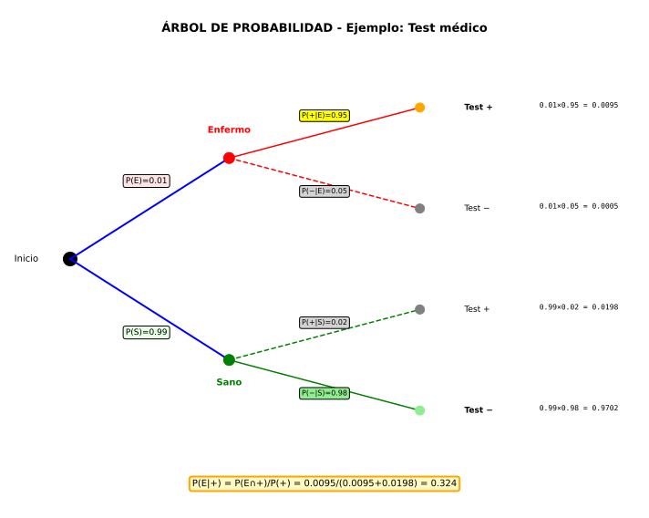

Interpretación: Al saber que B es por ocurrido, el espacio muestral se "reduce" a B. Dentro de ese nuevo espacio, buscamos A.

Herramienta visual para problemas secuenciales:
Ej 1: Dado equilibrado. Sean A="par", B="mayor que 3". Calcular P(A|B) y P(B|A). ¿Son independientes?
Identificación:
Calcular P(A|B):
Interpretación: Si sabemos que salió >3 (es decir, 4, 5 o 6), la probabilidad de que sea par es 2/3 (porque de {4,5,6}, dos son pares).
Calcular P(B|A):
Interpretación: Si sabemos que salió par (2, 4 o 6), la probabilidad de que sea >3 es 2/3.
¿Son independientes?
Alternativamente:
Ej 2: Urna con 3 rojas, 2 azules. Extraemos 2 bolas SIN reposición. ¿Probabilidad de que ambas sean rojas?
Árbol de probabilidad:
3/5 → R₂ P(RR) = 3/5 · 2/4
R₁
2/5 → A₂ P(RA) = 3/5 · 2/4
2/5 → R₂ P(AR) = 2/5 · 3/4
A₁
1/5 → A₂ P(AA) = 2/5 · 1/4
Primera bola:
Segunda bola (DEPENDE de la primera):
P(ambas rojas) = P(RR):
Verificación combinatoria:
Ej 3 (Contexto Vigo - Test médico):
Un test para detectar una enfermedad tiene:
Si una persona da positivo, ¿qué probabilidad tiene de estar REALMENTE enferma? [P(E|+)]
Datos:
Queremos: P(E|+)
Paso 1: Calcular P(+) usando probabilidad total
(Todas las formas de dar positivo):
Paso 2: Aplicar fórmula de probabilidad condicionada:
Conclusión sorprendente:
Importancia clínica: Por eso se hacen tests confirmatorios tras un positivo.
Ej 4: Lanzar dos dados. ¿Son independientes los sucesos A="primer dado par" y B="suma de dados es 7"?
Análisis de independencia:
Suceso A = "Primer dado par":
Suceso B = "Suma 7":
Intersección A ∩ B = "Primer par Y suma 7":
Test de independencia:
Interpretación: Saber que el primer dado es par no cambia la probabilidad de que la suma sea 7.